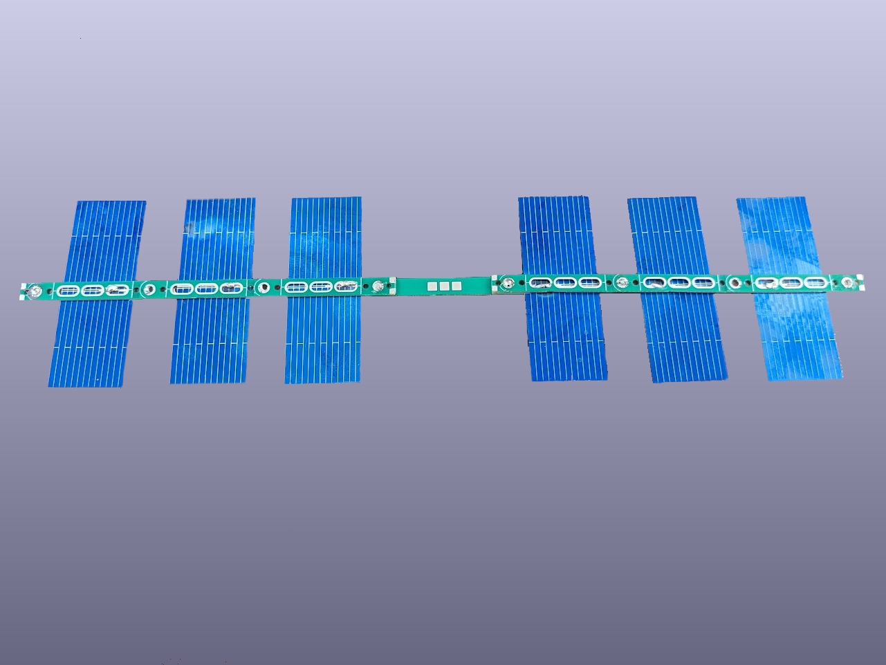
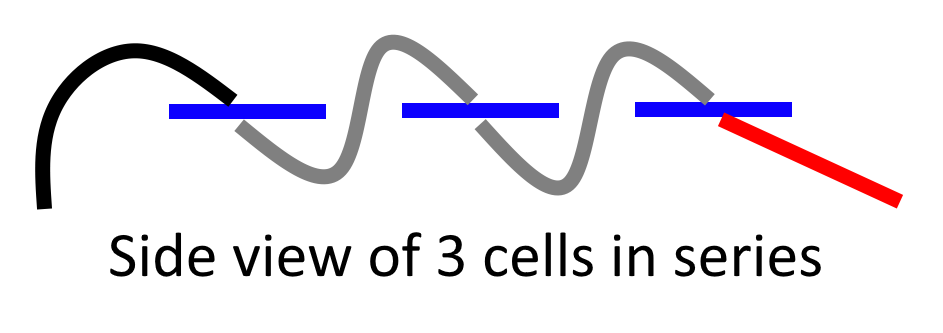
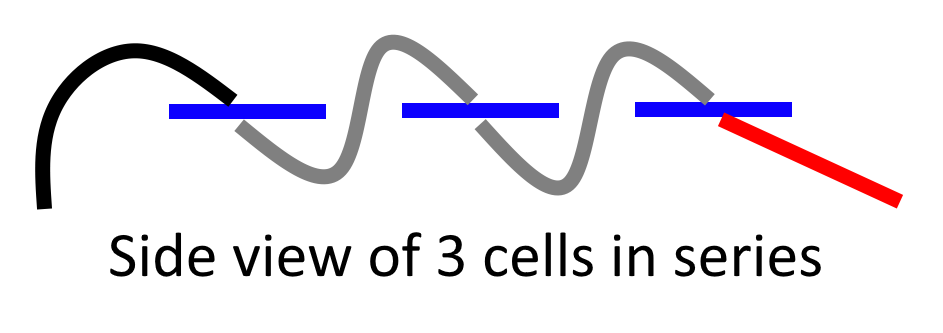
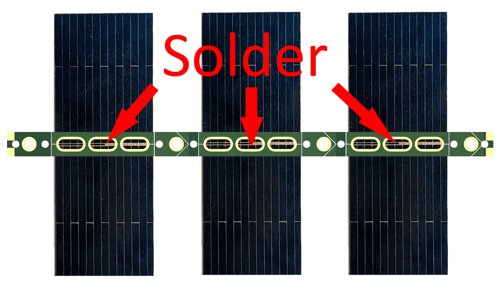
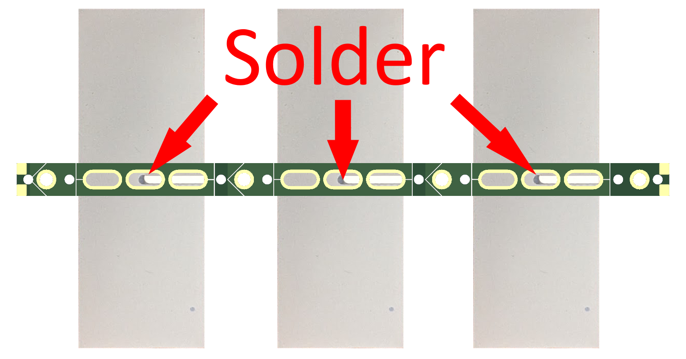
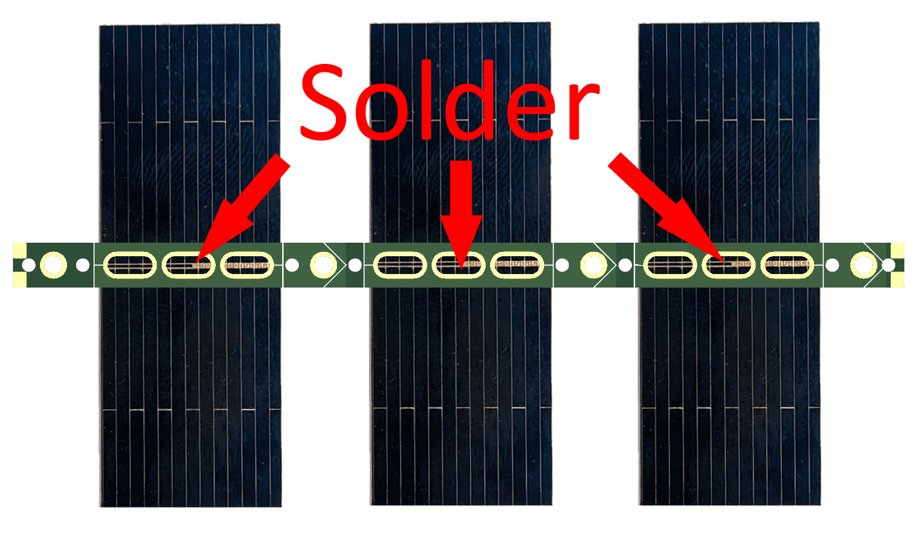
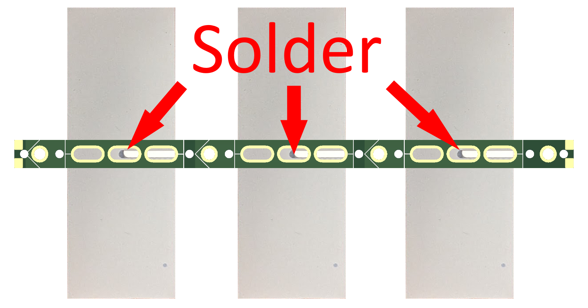
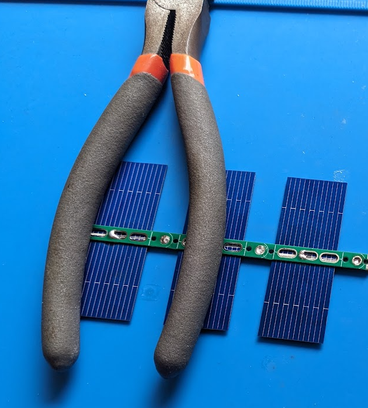
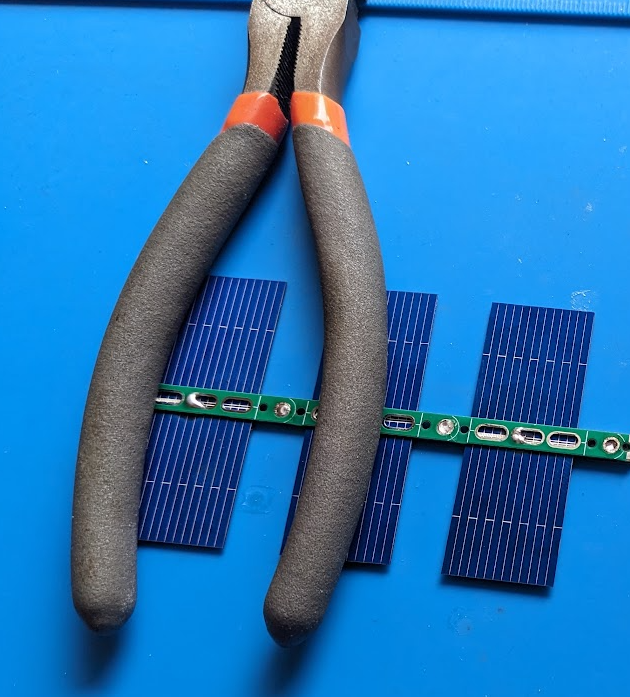

Solar Hardware - Solar System
Solar System is a kit that makes making your own solar panels easy.
The Solar System works for any tracker, but also has special features making it work especially well with Traquito Jetpack tracker.
The cost of kit + solar cells for a tracker is less than $1.00.

Solar Cells and Panels Background
Solar cells have a positive and negative side, and produce 0.5v voltage apiece.
 A solar panel is an arrangement of cells, and in the case of trackers, cells in series to equal a higher combined voltage.
That means soldering the cells in series (front to back), just as you would combine batteries to achieve a higher voltage.
In this diagram, we see 6 cells assembled into a panel which has 3.0v output.
A solar panel is an arrangement of cells, and in the case of trackers, cells in series to equal a higher combined voltage.
That means soldering the cells in series (front to back), just as you would combine batteries to achieve a higher voltage.
In this diagram, we see 6 cells assembled into a panel which has 3.0v output.
 Here is a similar 3-cell view from the side:

Here is a similar 3-cell view from the side:

Solar Cells and Panels Problems
Solar cells are very fragile!
Solar cells are very tricky to solder to.
Solar cells then need to be arranged on some kind of support structure (a panel) and mounted to a tracker in order to fly with it.
This is very error prone and time consuming (and boring).
The solution - Solar System
They key feature of Solar System is a 3-cell jig you use to solder the cells back-to-front.
That is this PCB:
You put one PCB on the top of the solar cells, another PCB on the bottom, and solder them together.
The internal circuitry of the PCB will make sure that once soldered, the electrical connections of the cells are back-to-front.
 Once you have one set of 3 cells assembled, make another.
Combine the two 3-cell jigs together using another PCB in the middle and you'll have yourself a 6-cell panel.
The 6 cells in series make 3.0v -- that's enough to power a tracker.
Once you have one set of 3 cells assembled, make another.
Combine the two 3-cell jigs together using another PCB in the middle and you'll have yourself a 6-cell panel.
The 6 cells in series make 3.0v -- that's enough to power a tracker.
Solar System Components
The 3-cell jig:
The center piece:
 The whole thing assembled together:
The whole thing assembled together:

Solar System Assembly - 3-Cell Jig
The orientation of the 3-cell jig PCB is critical.
The arrows on the PCB must face in opposite directions on the top and bottom.
Take note that the silkscreen marks the 3 sections where each cell goes, each with 3 oval slots per-cell.
Solder the cells into place both on the top and bottom. No need to use more than one oval per-side per-cell. No need fill the oval with solder, just use enough to make the connection.
This amount of solder is just fine:
 Top View:

Bottom View:

Once you have soldered the cells in place, solder the plated holes throughout the strip.
Best if you have a fine-point soldering iron which you can stick into each hole, swirl around, and feed enough solder such that the two PCBs become connected across the small vertical gap separating them.
Top View:

Bottom View:

Once you have soldered the cells in place, solder the plated holes throughout the strip.
Best if you have a fine-point soldering iron which you can stick into each hole, swirl around, and feed enough solder such that the two PCBs become connected across the small vertical gap separating them.
 It can be very helpful to weigh the cells and PCBs down as you work through them. A pair of cutters with padded handles works very well.

It can be very helpful to weigh the cells and PCBs down as you work through them. A pair of cutters with padded handles works very well.

Solar System Assembly - Combined
Combine the two 3-cell jigs together using the center piece.
The arrows must all point in the same direction (eg left to right).
Simply place a 3-cell jig on top of the center piece, then melt the solder from the jig into the center piece.
Do that for each side.
 Note -- The arrows point to the plated circle at the end of the 3-cell jig.
The circle the arrows point to has the same charge as the side of the cells you're looking at.
Put simply:
Note -- The arrows point to the plated circle at the end of the 3-cell jig.
The circle the arrows point to has the same charge as the side of the cells you're looking at.
Put simply:
- If you're looking at the top of the cells (negative), the arrows point to the negative circle
- If you're looking at the bottom of the cells (positive), the arrows point to the positive circle
Once you have assembled the 6-cell panel, the above still holds true, but now across 6 cells.
Solar System Electrical Hookup
[Show how to wire to Jetpack or other powered device]
Solar System Weight
[weight]
Solar System Costs
[Show cell costs and pcb costs]
Solar System PCB Cut Apart
[Explain the PCBs come in long strips - saves money, but you need to cut]
[Show how to cut apart the ordered PCBs]
Hardware Design File Downloads
Use these to order the Solar System from JLCPCB -- See here for related instructions: (link)
| JLCPCB Assembly Files | Description |
|
|
|